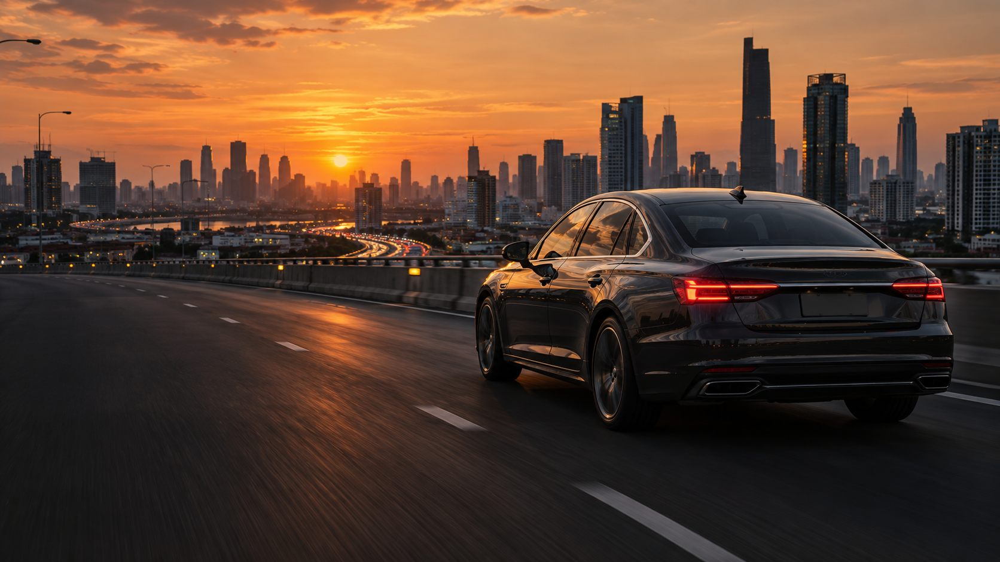

01 / A LITTLE QUIETช่วงเวลาสั้น ๆ
มากกว่าความสบาย
คือวันข้างหน้าที่ชัดกว่า

โลกที่อยู่ข้างนอก อาจร้อน เร่ง และวุ่นวาย
แต่คุณเลือกได้ว่าจะให้วันข้างในเป็นอย่างไร
บางวันเพื่อไปให้ถึง
บางวัน แค่ได้เดินทางด้วยกัน

มุมมองเดียวกัน ต่างความเข้ม
เลื่อนเพื่อสำรวจเฉดที่คุณชอบ
ภาพจำลองความเข้มเพื่อเปรียบเทียบเท่านั้น ไม่ใช่ค่า VLT หรือการจำลองความร้อน
การมองเห็นจริงขึ้นกับรุ่นฟิล์ม กระจก แสง และหน้าจอ
เริ่มจากสิ่งที่ผ่านกระจกเข้ามา
แล้วดูหลักฐานของฟิล์มแต่ละรุ่น
VLT บอกสัดส่วนแสงที่มองเห็นซึ่งผ่านกระจกและฟิล์ม ส่วนค่าป้องกัน UV และค่าพลังงานความร้อนเป็นคนละเรื่องกัน
เปรียบเทียบภายใต้เงื่อนไขเดียวกัน ทั้งชนิดกระจก รุ่น เฉด และวิธีวัด ไม่ใช้ตัวเลขคนละวิธีมาสรุปแทนกัน
ขอเอกสารทดสอบที่ระบุรุ่นและเฉดจากร้าน ก่อนตัดสินใจเลือกฟิล์มสำหรับรถของคุณ
คน รถ และเรื่องราวระหว่างทาง
โลกของ FINNIX เริ่มต้นที่คุณ
เริ่มจากพื้นที่ที่สะดวก
แล้วไปดู ลอง และเลือกด้วยตัวเอง
ค้นหาพื้นที่ หรือเปิดแผนที่เพื่อดูบริเวณที่คุณสะดวก
แผนที่โหลดจาก Google Maps เมื่อกดเปิดหรือค้นหาเท่านั้น · ติดต่อร้านเพื่อยืนยันสินค้าและเวลาบริการก่อนเดินทาง